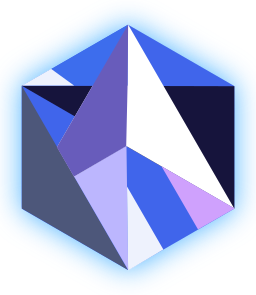

The Amethyst Engine
Note: This project is a work in progress and is very incomplete. Pardon the dust!
Howdy! This book will teach you everything you need to know about building video games and interactive simulations with the Amethyst game engine. This engine is written entirely in Rust, a safe and fast systems programming language, and sports a clean and modern design. More correctly, though, Amethyst is actually a suite of separate libraries and tools that collectively make up a game engine.
Amethyst is free and open source software, distributed under a dual license of MIT and Apache. This means that the engine is given to you at no cost and its source code is completely yours to tinker with. The code is available on GitHub. Contributions and feature requests are welcome!
This book is split into three sections (more coming). This page is the first. The others are:
- Getting Started – Prepare your computer for Amethyst development.
- A Simple Application – Build a basic pong game in Rust.
- Glossary - Defines special terms used throughout the book.
Read the crate-level API documentation for more details.
Why are you building this?
I've worked with a few game engines over the years, namely Unity and the Unreal Development Kit, and both are pretty solid solutions if you want to build a quality game. But each have their own pros and cons that you have to weigh before using them, especially in regards to performance and scalability.
One engine I've always admired as a programmer but never had a chance to play with is the Bitsquid Engine (now called Autodesk Stingray). It's fast, forward-thinking, highly parallel, and data-driven. It seems like a wonderful platform for rapid prototyping. I've wanted to play around with a Bitsquid-like engine for a while, but I couldn't find any open-source equivalents out there. Most of those I did find stuck to outdated design patterns and lacked the multi-core scalability I was looking for. So I set out to write my own.
In short, I am writing Amethyst to scratch three of my own itches:
- Teach myself Rust, game development, and computer graphics in their purest form, rather than through the lens of a particular game engine.
- Write a modular, parallel, data-oriented, and data-driven engine suited for rapid prototyping that demands (a little) less boilerplate from the user.
- Build a toolset that splits up the traditional "mega-editor" into several small but well-integrated tools, adhering to the Unix philosophy.
Contributing
The Markdown source files from which this book is generated can be found on GitHub. Pull requests are welcome!
Getting started
Setting up Rust
Make sure to have the latest stable of Rust installed. We recommend using rustup for that.
After you did that, Rust should be fully installed.
Required dependencies
If you are on Linux, you'll need to install libasound2-dev.
Setting up Amethyst
You can either use the Amethyst CLI or just cargo to set up your project. After executing
amethyst new game
you should get Cargo.toml, src/main.rs and resources/display_config.ron.
In case you're doing this with cargo, here's what you need to do:
- Add
amethystas dependency in yourCargo.toml. - Create a
resourcesfolder and put adisplay_config.ronin it. - Start with one of the [examples][ex] from the Amethyst repository (e.g.
window) for the source code. Watch out to use the right example for the version of Amethyst you specified inCargo.toml.
We don't have any tutorials yet, but there's a Gitter room where you can ask in case you want an explanation for something. If you'd like to help out, a tutorial would be much appreciated!
[DRAFT] Writing a Simple Application
In this section, I'll walk you through implementing a simple 3D Pong clone using Amethyst. You will learn a bit more about game states and also basic entity-component-system game design and we will apply those concepts and build a little toy game. Hopefully by the end of this section, you will have gotten the hang of working with Amethyst.
Glossary
Data-driven design
Describes a program that has its logic defined largely in data rather than in compiled code. Ideally, this would permit the user to edit their code and resources using offline tools and have the program hot-reload the changes at run-time for instant feedback without the need for recompilation. The bare minimum qualification for a data-driven program is the ability to read external content (text files, scripts, byte streams) and mutate its behavior accordingly.
Data-oriented programming
Not to be confused with data-driven design, data-oriented programming is a programming paradigm, like object-oriented programming (OOP) or procedural programming. Where OOP focuses on modeling a problem in terms of interacting objects, and procedural programming tries to model a problem in terms of sequential or recursive steps or procedures, data-oriented programming shifts the focus towards the data being operated on: the data type, its memory layout, how it will be processed. Software written in a data-oriented manner tends toward high-throughput pipelining, modularity, separation of concerns, and massive parallelism. If architected correctly, data-oriented software can be very cache-friendly and easy to scale on systems with multiple cores.
Note: Data-oriented programming does not necessarily imply that a program is data-driven. Data-driven behavior can be implemented with any programming approach you like.
Entity-component-system (ECS) model
Describes a game programming design pattern invented as a reaction to the deep-rooted problems with using inheritance (is-a relationship) to represent game objects, including the deadly diamond of death and god objects. The inheritance-based approach was especially common in the game industry during the 1990's and early 2000's.
This alternative model makes use of composition (has-a relationship) instead of inheritance to represent objects in the game world, flattening the hierarchy and eliminating the problems above, while increasing flexibility. The holistic ECS approach is broken into three key pieces:
- Entity: Represents a single object in the game world. Has no functionality on its own. The world owns a collection of entities (either in a flat list or a hierarchy). Each entity has a unique identifier or name, for the sake of ease of use.
- Component: A plain-old-data structure that describes a certain trait an
entity can have. Can be "attached" to entities to grant them certain
abilities, e.g. a
Lightcomponent contains parameters to make an entity glow, or aCollidablecomponent can grant an entity collision detection properties. These components do not have any logic. They contain only data. - System: This is where the magic happens! Systems are centralized game engine
subsystems that perform a specific function, such as rendering, physics, audio,
etc. Every frame, they process each entity in the game world looking for
components that are relevant to them, reading their contents, and performing
actions. For example, a
Renderingsystem could search for all entities that haveLight,Mesh, orEmittercomponents and draw them to the screen.
This approach could potentially be stretched to fit the model-view-controller
(MVC) paradigm popular in GUI and Web development circles: entities and
components together represent the model, and systems represent either views
(Rendering, Audio) or controllers (Input, AI, Physics), depending on
their purpose.
Another great advantage of the ECS model is the ability to rapidly prototype a game simply by describing objects' characteristics in terms of creating entities and attaching components to them, with very little game code involved. And all of this data can be easily serialized or de-serialized into a human-friendly plain text format like YAML (what we use) or JSON.
For more detailed explanations of entity-component-system designs, please see this great post on Reddit and this Stack Overflow answer.